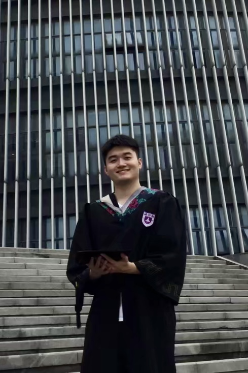

Haoqi Wang
Ph.D. Candidate
Biomedical Engineering
The University of Texas at Austin
haoqiwang@utexas.edu
Resume LinkedIn GitHub
Google Scholar ORCID
About me
I am currently a Ph.D. Candidate in Biomedical Engineering at The University of Texas at Austin. My research focuses on building tools to support clinical decision making.
My research interests include:
- Biomedical informatics
- Medical biophysics
- Machine learning
- Clinical decision support
I received my MS degree in Statistics in 2021 at The University of Texas at Austin and BS degree in Physics at Nanjing University in 2019. I did internship in Scientific Solution Engineering Team at flywheel.io during 2023 summer, where I worked on medical image segmentation and cloud deployment.
Projects
Medical Image Segmentation (code), June. 2023-Aug. 2023
- Evaluated 3D image segmentation deep learning models and investigated factors influencing model performance
- Cleaned and processed medical images, including DICOM to NIfTI conversion, image augmentation, etc.
- Fine-tuned neural networks on Google Cloud Vertex AI GPU CUDA with small dataset, reaching accuracy of 0.95
- Managed CI/CD, developed Docker image and deployed models to Kubernetes cloud, enabling large-scale inference
- Built statistical model and demonstrated the importance of acquisition parameters in analyzing outliers
Text to SQL (code), Mar. 2021-May 2021
- Led a team to build a natural language processing (NLP) model for translating textual questions into SQL queries
- Implemented RNN-LSTM generative model and attention, beam search, grammar check, which increased the accuracy by 27.2% compared with baseline
Time Series Counts Models (code), Sept. 2021-present
- Proposed recurrent neural networks to forecast crash counts and trained on 700k records from 2010 to 2019 in Texas
- Merged geometric, demographic, and temporal features, resulting an increase in R2 by 15.9% compared to baseline
Application of online learning in clinical decision support system (code), Oct. 2021-Dec. 2021
- Proposed to identify a clinical photograph of a prior patient that the current patient perceives as being similar to her mental image of what she will look like post-operatively as fast as possible
- Implemented several bandit algorithms, including Upper Confidence Bound (UCB), tree-based adaptive recommender, graph-based UCB, near neighbor UCB and found near neighbor UCB performs the best with small number of rounds
Deep reinforcement learning in multi-agent environment (code), Mar. 2022-May 2022
- Built deep reinforcement learning model in multi-agent environment of StarCraft II
- Implemented deep graph neural network to model inter-agent interaction, especially added relation kernel (attention mechanism by transformer) for agents to cooperate, which increased reward more than 90% compared with baseline of deep Q learning (PyTorch)
Publications
Yiran Li*, Jing Cheng*, Peyman Delparastan*, Haoqi Wang*, Severin J. Sigg, Kelsey G. DeFrates, Yi Cao and Phillip B. Messersmith. Molecular design principles of Lysine-DOPA wet adhesion. Nature Communications (2020). (*equal contribution) (paper)
Krista M. Nicklaus, Haoqi Wang, Mary Catherine Bordes, Alex Zaharan, Urmila Sampathkumar, Audrey L. Cheong, Gregory P. Reece, Summer E. Hanson, Fatima A. Merchant, Mia K. Markey. Potential of intra-operative 3D photography and 3D visualization in breast reconstruction. Plastic and Reconstructive Surgery Global Open (2021). (paper)
Haoqi Wang, Jun Liu, Mary Catherine Bordes, Deepti Chopra, Gregory P. Reece, Mia K. Markey, Aubri S. Hoffman*. The role of psychosocial factors in patients’ recollections of breast reconstruction options discussed with their surgeons. Scientific Reports (2022). (paper, code)
Theodore Charm, Haoqi Wang, Natalia Zuniga-Garcia, Mostaq Ahmed, Kara M Kockelman. Predicting crash occurrence at intersections in Texas: an opportunity for machine learning. Transportation Planning and Technology (2023). (paper, code)
Haoqi Wang, Krista Nicklaus, Eloise Jewett, Eeshaan Rehani, Tzuan A. Chen, Jeff Engelmann, Mary Catherine Bordes, Deepti Chopra, Gregory P. Reece, Z-Hye Lee, Mia K. Markey. Assessing Saliency Models of Observers’ Visual Attention on Acquired Facial Differences. Journal of Medical Imaging (2023). (paper)